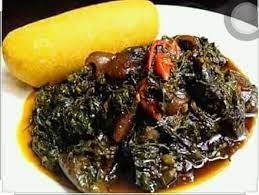

Fufu and Eru

Description
This delicious vegetable is a specialty of the Bayangs of Manyu Division in the Southwest Region of Cameroon.
Fufu and eru has gained national popularity and is enjoying the high gastronomy morals.
Ingredients
- Water fufu (akpwu)
- water leaf (spinach)
- palm oil
- maggi and salt
- pepper
- crayfish
- smoked fish
- cow skin (canda)
- meat or snails
Steps
Preparing the eru:
- Wash the canda with clean scouring sponge (iron sponge) and cut into sizable pieces.
- Place on fire. Immediately it starts boiling, add a pinch of salt to taste.
- Allow to boil while constantly checking if it is cooked and then add
- smoked fish. Allow to boil for five minutes again.
- Wash thoroughly the sliced eru and strain in a sieve.
- Pluck water leaf from the stems, wash and slice
- Put in a pot and place on fire with just enough heat.
- In order for the eru to maintain its green colour, add a pinch of salt and
- palm oil to the sliced water leaf depending on the quantity of the eru.
- Add the cooked canda and smoked fish to the water leaf. Immediately it starts boiling
- Allow to cook for 10 to 15 minutes. When the oil must have cooked well, add the eru while stirring.
Add maggi and pepper to taste.
- Stir continuously to mix the eru properly.
- If if tastes nice in the mouth, then the eru is ready.
The water fufu:
- Put raw water fufu in a deep pot.
- Mix with just enough water to make it smooth.
- Place on fire, preferably wood fire with just enough heat.
- Start stirring immediately the pot is on fire until the paste is thick and the
- white colour of the fufu has turned a little brown.
- Add a little water, depending on the quantity of fufu.
- Allow to boil for about 20 minutes and remove the pot from the fire.
- Continue mingling while adding little drops of fresh water – not hot water! so as to let it
attain an immaculate white and to be thoroughly smooth.
Back to home